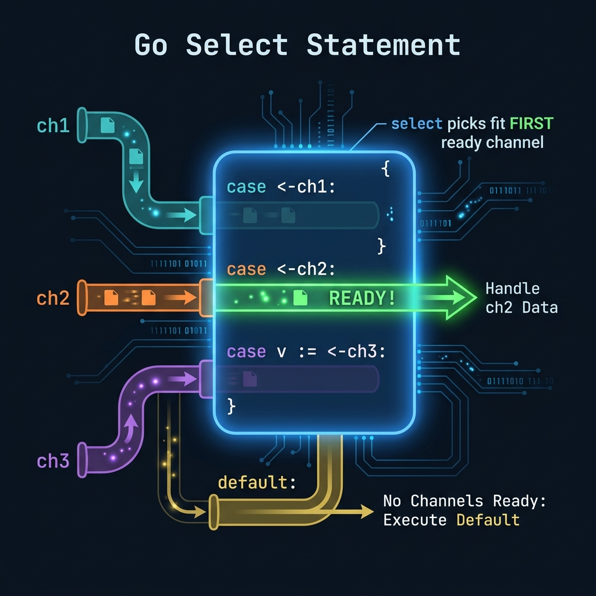
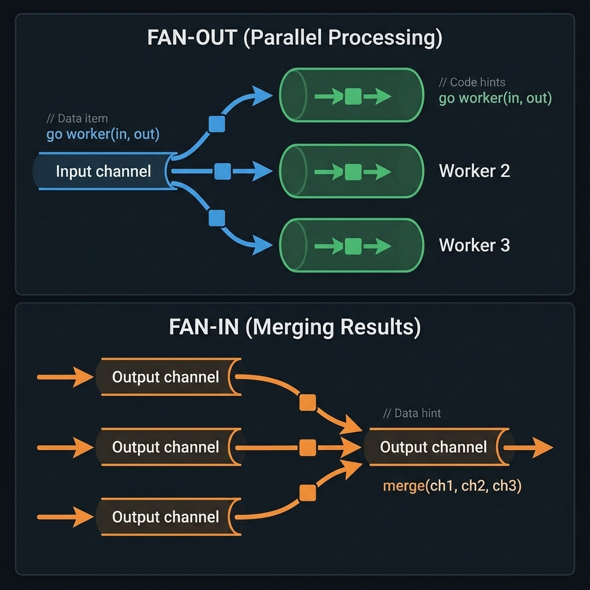
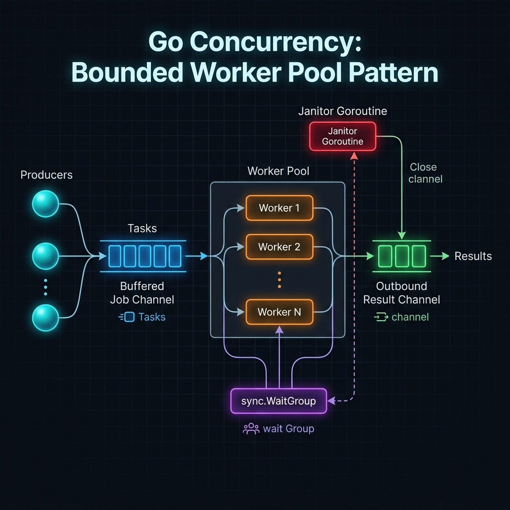
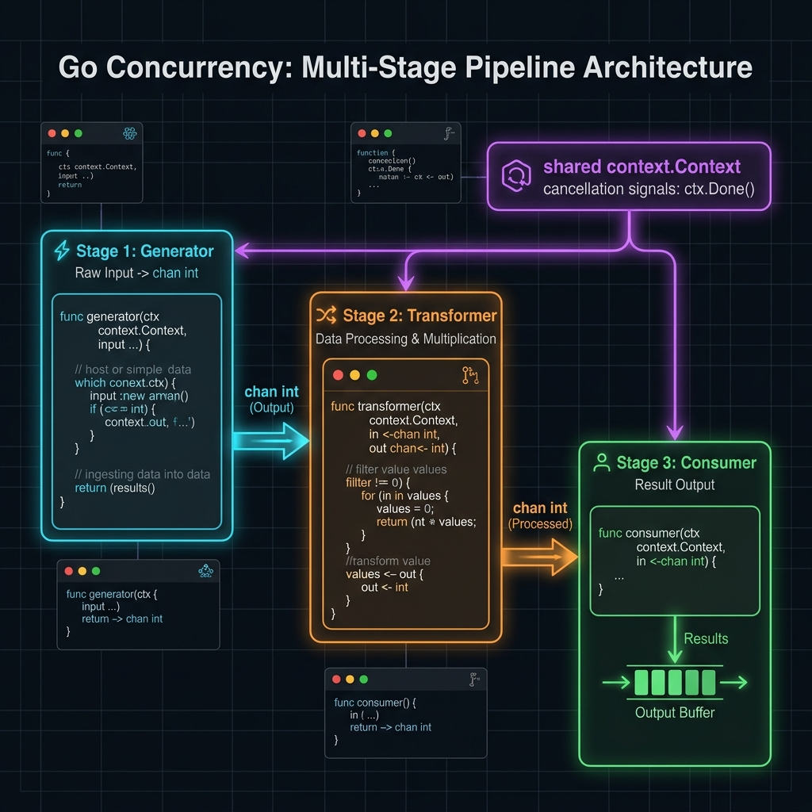
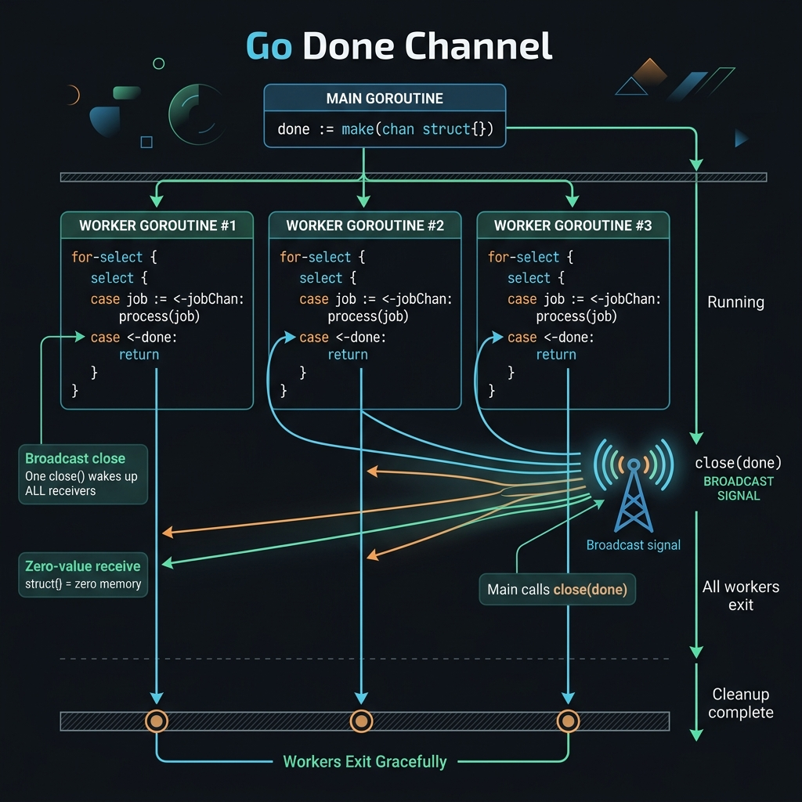

Hướng dẫn toàn diện từ nền tảng đến nâng cao — Multiplexing channels, patterns, anti-patterns và production-grade code trong Go.
Select statement trong Go là một control flow construct cho phép một goroutine đồng thời chờ nhiều channel operations và thực thi nhánh đầu tiên sẵn sàng (ready). Nó là nền tảng của Go's CSP (Communicating Sequential Processes) model — một trong những lý do Go xử lý concurrency tốt hơn nhiều ngôn ngữ khác.
Go theo triết lý của Tony Hoare: "Don't communicate by sharing memory; share memory by communicating." — select là công cụ cốt lõi để hiện thực triết lý này trong thực tế.

| Cơ chế | Ngôn ngữ | Đặc điểm | Hạn chế so với Go select |
|---|---|---|---|
| select(2) syscall | C/POSIX | Multiplex file descriptors | Chỉ cho I/O; không phải language-level |
| epoll/kqueue | C/Linux | Async I/O events | Phức tạp, low-level, error-prone |
| Promise.race() | JavaScript | First promise to resolve | Single-use, không bidirectional |
| alt/alts! | Clojure/core.async | Channel multiplexing | Macro-based; không first-class |
| select {} | Go | Native channel multiplexing | Language primitive, goroutine-native, type-safe |
time.After() và context.Done() để implement timeout và graceful shutdown một cách idiomatic.// Cú pháp đầy đủ của select statement select { case value := <-ch1: // Receive từ channel (với assignment) // Sử dụng value doSomething(value) case ch2 <- data: // Send vào channel // Send thành công case v1, ok := <-ch3: // Receive với ok-idiom (kiểm tra channel đã đóng) if !ok { // ch3 đã được đóng return } case <-time.After(5 * time.Second): // Timeout pattern // Timeout sau 5 giây case <-ctx.Done(): // Context cancellation return ctx.Err() default: // Non-blocking — chạy ngay nếu không có case nào ready // Không block }
Khi nhiều cases cùng sẵn sàng, Go runtime chọn một case ngẫu nhiên (không phải theo thứ tự). Điều này đảm bảo fairness — không có case nào bị starvation. Đây là thiết kế có chủ đích theo Go spec. Code của bạn không được phụ thuộc vào thứ tự chọn.
| Case Type | Cú pháp | Mô tả | Khi nào ready? |
|---|---|---|---|
| Receive (with value) | case v := <-ch: | Nhận giá trị từ channel, assign vào v | Channel có data hoặc đã đóng |
| Receive (discard) | case <-ch: | Nhận nhưng bỏ giá trị (dùng cho signal) | Channel có data hoặc đã đóng |
| Receive (ok check) | case v, ok := <-ch: | Nhận với kiểm tra channel đã đóng | Channel có data hoặc đã đóng |
| Send | case ch <- value: | Gửi value vào channel | Channel sẵn sàng nhận (có receiver) |
| Default | default: | Thực thi khi không có case nào ready | Luôn luôn |
package main import ( "fmt" "time" ) // Đây là ví dụ cơ bản nhất — select đợi từ nhiều channels func basicSelect() { ch1 := make(chan string) ch2 := make(chan string) // Goroutine 1: gửi sau 1 giây go func() { time.Sleep(1 * time.Second) ch1 <- "kết quả từ ch1" }() // Goroutine 2: gửi sau 2 giây go func() { time.Sleep(2 * time.Second) ch2 <- "kết quả từ ch2" }() // select sẽ unblock khi ch1 có data (sau 1s) // ch2 vẫn chưa ready, nên ch1 được chọn select { case msg := <-ch1: fmt.Println("ch1:", msg) case msg := <-ch2: fmt.Println("ch2:", msg) } // Output: ch1: kết quả từ ch1 (sau ~1s) } // Ví dụ với loop: nhận nhiều messages func selectInLoop() { ch1 := make(chan int) ch2 := make(chan int) done := make(chan struct{}) // Producer goroutines go func() { for i := 0; i < 3; i++ { ch1 <- i } }() go func() { for i := 10; i < 13; i++ { ch2 <- i } close(done) // signal hoàn thành }() for { select { case v := <-ch1: fmt.Printf("ch1: %d\n", v) case v := <-ch2: fmt.Printf("ch2: %d\n", v) case <-done: fmt.Println("done!") return } } }
Kết hợp for { select { ... } } là pattern phổ biến nhất trong Go — đây là "event loop" của goroutine. Đây là nền tảng cho toàn bộ các patterns nâng cao.
Khi select có default clause, nó trở thành non-blocking: nếu không có case nào ready ngay lập tức, default sẽ thực thi thay vì block goroutine.
// ──────────────────────────────────────── // Pattern 1: Non-blocking receive (try-receive) // ──────────────────────────────────────── func tryReceive(ch <-chan int) (int, bool) { select { case v := <-ch: return v, true default: return 0, false // Không có data, không block } } // ──────────────────────────────────────── // Pattern 2: Non-blocking send (try-send) // ──────────────────────────────────────── func trySend(ch chan<- int, value int) bool { select { case ch <- value: return true // Gửi thành công default: return false // Channel full hoặc không có receiver } } // ──────────────────────────────────────── // Pattern 3: Polling với delay — background checker // ──────────────────────────────────────── func pollingWorker(ctx context.Context, events <-chan Event) { ticker := time.NewTicker(100 * time.Millisecond) defer ticker.Stop() for { // Kiểm tra events ngay lập tức (non-blocking) select { case e := <-events: processEvent(e) continue // Drain toàn bộ buffer trước default: // Không có events ngay lúc này } // Sau khi drain, đợi ticker hoặc ctx select { case <-ticker.C: doPeriodicWork() case <-ctx.Done(): return } } } // ──────────────────────────────────────── // Pattern 4: Atomic channel operation — kiểm tra trước khi gửi // ──────────────────────────────────────── func safeBroadcast(subscribers []chan string, msg string) { for _, sub := range subscribers { select { case sub <- msg: // Gửi nếu subscriber sẵn sàng nhận default: // Bỏ qua subscriber bị lag (buffer đầy) } } }
Đừng dùng default để tạo busy-wait loop — nó sẽ tiêu thụ 100% CPU của một core. Thay vào đó hãy dùng time.Sleep() hoặc ticker để thêm delay.
// CPU usage: ~100%! for { select { case v := <-ch: process(v) default: // Spinning... } }
t := time.NewTicker(10*time.Millisecond) defer t.Stop() for { select { case v := <-ch: process(v) case <-t.C: // Periodic check } }
package main import ( "context" "fmt" "time" ) // ── Pattern 1: Simple timeout với time.After ────────────────────── func withSimpleTimeout(ch <-chan string) (string, error) { select { case result := <-ch: return result, nil case <-time.After(3 * time.Second): return "", fmt.Errorf("timeout sau 3 giây") } } // ── Pattern 2: Per-operation timeout (idiomatic với Timer) ──────── // time.After() tạo timer không thể cancel → memory leak trong loop! // Dùng time.NewTimer() để có thể Stop() func withReusableTimeout(ch <-chan int, d time.Duration) { timer := time.NewTimer(d) defer timer.Stop() // CRITICAL: luôn Stop để tránh goroutine leak select { case v := <-ch: fmt.Println("nhận được:", v) case <-timer.C: fmt.Println("timeout!") } } // ── Pattern 3: HTTP call với timeout (production-grade) ────────── type APIResult struct { Data string Error error } func fetchWithTimeout(ctx context.Context, url string) (string, error) { resultCh := make(chan APIResult, 1) // buffered để goroutine không leak go func() { // Truyền context vào để HTTP call cũng biết timeout data, err := callAPI(ctx, url) select { case resultCh <- APIResult{Data: data, Error: err}: case <-ctx.Done(): // Caller đã timeout — goroutine tự clean up } }() select { case res := <-resultCh: return res.Data, res.Error case <-ctx.Done(): return "", fmt.Errorf("request cancelled: %w", ctx.Err()) } } // ── Pattern 4: Multiple timeouts (deadline cascade) ────────────── func processWithDeadlines(ctx context.Context, data []byte) error { // Tổng timeout: từ context cha // Per-step timeout: từ WithTimeout mới stepCtx, cancel := context.WithTimeout(ctx, 500*time.Millisecond) defer cancel() resultCh := make(chan error, 1) go func() { resultCh <- validateData(stepCtx, data) }() select { case err := <-resultCh: return err case <-stepCtx.Done(): return fmt.Errorf("validate timeout: %w", stepCtx.Err()) } }
Mỗi lần gọi time.After() tạo ra một *Timer mới. Timer này chỉ được GC sau khi fire — nếu case khác được chọn trước, timer vẫn tồn tại cho đến khi hết hạn. Trong hot loops, điều này dẫn đến memory leak. Giải pháp: dùng time.NewTimer() + defer timer.Stop().
package main import ( "context" "fmt" "os" "os/signal" "sync" "syscall" "time" ) type Worker struct { id int jobs <-chan Job result chan<- Result wg *sync.WaitGroup } func (w *Worker) Run(ctx context.Context) { defer w.wg.Done() fmt.Printf("worker %d started\n", w.id) for { select { case job, ok := <-w.jobs: if !ok { // Channel đóng → không còn jobs, exit cleanly fmt.Printf("worker %d: jobs channel closed\n", w.id) return } // Xử lý job — nhưng vẫn check context trong quá trình xử lý result, err := processJobWithContext(ctx, job) if err != nil { fmt.Printf("worker %d: job error: %v\n", w.id, err) continue } // Gửi result — nhưng không block nếu context đã cancel select { case w.result <- result: case <-ctx.Done(): fmt.Printf("worker %d: shutdown while sending result\n", w.id) return } case <-ctx.Done(): // Nhận signal shutdown — thoát gracefully fmt.Printf("worker %d: shutdown, reason: %v\n", w.id, ctx.Err()) return } } } func main() { // Setup signal handling ctx, cancel := context.WithCancel(context.Background()) defer cancel() sigCh := make(chan os.Signal, 1) signal.Notify(sigCh, syscall.SIGINT, syscall.SIGTERM) jobs := make(chan Job, 100) results := make(chan Result, 100) var wg sync.WaitGroup // Khởi động 5 workers for i := 0; i < 5; i++ { wg.Add(1) w := &Worker{id: i, jobs: jobs, result: results, wg: &wg} go w.Run(ctx) } // Main event loop — nhận signal shutdown select { case sig := <-sigCh: fmt.Printf("\nNhận signal: %v, shutting down...\n", sig) cancel() // Propagate cancellation đến tất cả workers case <-time.After(30 * time.Second): fmt.Println("Demo ended after 30s") } // Đóng jobs channel để workers thoát khi hết việc close(jobs) // Đợi tất cả workers hoàn thành với timeout done := make(chan struct{}) go func() { wg.Wait() close(done) }() select { case <-done: fmt.Println("Graceful shutdown hoàn thành") case <-time.After(10 * time.Second): fmt.Println("Force shutdown sau 10s timeout") } }

package main import ( "context" "reflect" "sync" ) // ── Pattern 1: Static fan-in — compile-time known số lượng channels func fanIn2[T any]( ctx context.Context, ch1, ch2 <-chan T, ) <-chan T { out := make(chan T) go func() { defer close(out) for { select { case v, ok := <-ch1: if !ok { ch1 = nil } // Nil channel block forever — loại bỏ khỏi select else { out <- v } case v, ok := <-ch2: if !ok { ch2 = nil } else { out <- v } case <-ctx.Done(): return } // Khi cả hai channels đều nil → thoát if ch1 == nil && ch2 == nil { return } } }() return out } // ── Pattern 2: Dynamic fan-in — N channels, idiomatic với goroutine per channel // Đây là pattern phổ biến nhất trong production func fanInDynamic[T any]( ctx context.Context, channels ...<-chan T, ) <-chan T { merged := make(chan T, len(channels)) var wg sync.WaitGroup forward := func(ch <-chan T) { defer wg.Done() for { select { case v, ok := <-ch: if !ok { return // channel đóng, goroutine thoát } select { case merged <- v: case <-ctx.Done(): return } case <-ctx.Done(): return } } } wg.Add(len(channels)) for _, ch := range channels { go forward(ch) } go func() { wg.Wait() close(merged) }() return merged } // ── Pattern 3: Reflect-based fan-in — dùng reflect.Select cho dynamic N // Dùng khi N quá lớn hoặc không biết trước // Lưu ý: chậm hơn vì reflection overhead func fanInReflect[T any]( ctx context.Context, channels []<-chan T, ) <-chan T { out := make(chan T) go func() { defer close(out) // Xây dựng []reflect.SelectCase từ channels + ctx.Done() cases := make([]reflect.SelectCase, len(channels)+1) for i, ch := range channels { cases[i] = reflect.SelectCase{ Dir: reflect.SelectRecv, Chan: reflect.ValueOf(ch), } } // Thêm ctx.Done() case cuối doneIdx := len(channels) cases[doneIdx] = reflect.SelectCase{ Dir: reflect.SelectRecv, Chan: reflect.ValueOf(ctx.Done()), } for len(cases) > 1 { // còn ít nhất 1 data channel (ngoài ctx) chosen, val, ok := reflect.Select(cases) switch { case chosen == len(cases)-1: // ctx.Done() triggered return case !ok: // Channel đóng → loại khỏi cases cases = append(cases[:chosen], cases[chosen+1:]...) default: out <- val.Interface().(T) } } }() return out }
Trong Go, receive từ nil channel block mãi mãi. Khi một channel đóng trong static fan-in, gán nó thành nil để "tắt" case đó — select sẽ không bao giờ chọn nó nữa. Đây là idiom Go cực kỳ quan trọng.
package main import ( "context" "fmt" ) // ── Technique 1: Double select (drain high-priority first) // Đây là idiom cổ điển nhất cho priority select func prioritySelect( ctx context.Context, high <-chan string, low <-chan string, ) { for { // Bước 1: Kiểm tra high-priority trước (non-blocking) select { case msg := <-high: fmt.Println("🔴 HIGH:", msg) continue // Drain hết high-priority queue trước default: } // Bước 2: Nếu không có high-priority, xử lý cả hai select { case msg := <-high: fmt.Println("🔴 HIGH:", msg) case msg := <-low: fmt.Println("🟡 LOW:", msg) case <-ctx.Done(): return } } } // ── Technique 2: PriorityQueue processor — nhiều mức ưu tiên type Priority int const ( PriorityCritical Priority = iota PriorityHigh PriorityNormal PriorityLow ) type Message struct { Priority Priority Body string } type PriorityProcessor struct { critical <-chan Message high <-chan Message normal <-chan Message low <-chan Message } func (p *PriorityProcessor) Process(ctx context.Context) { for { // Priority 0: Critical (luôn drain trước) select { case msg := <-p.critical: handleCritical(msg) continue default: } // Priority 1: High select { case msg := <-p.critical: handleCritical(msg) continue case msg := <-p.high: handleHigh(msg) continue default: } // Priority 2+: Normal và Low — công bằng với nhau select { case msg := <-p.critical: handleCritical(msg) case msg := <-p.high: handleHigh(msg) case msg := <-p.normal: handleNormal(msg) case msg := <-p.low: handleLow(msg) case <-ctx.Done(): return } } }

package main import ( "context" "fmt" "sync" "time" ) type Job struct { ID int Payload string } type Result struct { JobID int Output string Err error } type WorkerPool struct { numWorkers int jobs chan Job results chan Result semaphore chan struct{} // Rate limiting } func NewWorkerPool(workers, queueSize int) *WorkerPool { return &WorkerPool{ numWorkers: workers, jobs: make(chan Job, queueSize), results: make(chan Result, queueSize), semaphore: make(chan struct{}, workers), } } func (p *WorkerPool) Start(ctx context.Context) { var wg sync.WaitGroup for i := 0; i < p.numWorkers; i++ { wg.Add(1) go func(id int) { defer wg.Done() p.worker(ctx, id) }(i) } go func() { wg.Wait() close(p.results) }() } func (p *WorkerPool) worker(ctx context.Context, id int) { for { select { case job, ok := <-p.jobs: if !ok { return // Channel đóng } // Acquire semaphore (rate limiting) select { case p.semaphore <- struct{}{}: case <-ctx.Done(): return } result := doWork(ctx, job) <-p.semaphore // Release semaphore // Gửi result với cancellation support select { case p.results <- result: case <-ctx.Done(): return } case <-ctx.Done(): fmt.Printf("worker %d: cancelled\n", id) return } } } // Submit gửi job vào pool với backpressure support func (p *WorkerPool) Submit(ctx context.Context, job Job) error { select { case p.jobs <- job: return nil case <-ctx.Done(): return fmt.Errorf("submit cancelled: %w", ctx.Err()) case <-time.After(5 * time.Second): return fmt.Errorf("submit timeout: queue đầy") } } func doWork(ctx context.Context, job Job) Result { // Kiểm tra context trong quá trình xử lý select { case <-ctx.Done(): return Result{JobID: job.ID, Err: ctx.Err()} case <-time.After(100 * time.Millisecond): // Simulate work } return Result{JobID: job.ID, Output: fmt.Sprintf("done-%d", job.ID)} }

package pipeline import "context" // Stage là một generic pipeline stage function type Stage[In, Out any] func(context.Context, <-chan In) <-chan Out // Map áp dụng transform function lên mỗi element func Map[In, Out any]( ctx context.Context, in <-chan In, fn func(In) Out, ) <-chan Out { out := make(chan Out) go func() { defer close(out) for v := range in { select { case out <- fn(v): case <-ctx.Done(): return } } }() return out } // Filter chỉ pass qua elements thỏa mãn predicate func Filter[T any]( ctx context.Context, in <-chan T, pred func(T) bool, ) <-chan T { out := make(chan T) go func() { defer close(out) for v := range in { if !pred(v) { continue } select { case out <- v: case <-ctx.Done(): return } } }() return out } // Batch gộp N elements thành một slice func Batch[T any]( ctx context.Context, in <-chan T, size int, timeout time.Duration, ) <-chan []T { out := make(chan []T) go func() { defer close(out) batch := make([]T, 0, size) timer := time.NewTimer(timeout) defer timer.Stop() flush := func() { if len(batch) == 0 { return } toSend := make([]T, len(batch)) copy(toSend, batch) batch = batch[:0] select { case out <- toSend: case <-ctx.Done(): } } for { select { case v, ok := <-in: if !ok { flush() // Flush batch còn lại return } batch = append(batch, v) if len(batch) >= size { flush() timer.Reset(timeout) // Reset timer sau mỗi flush } case <-timer.C: flush() // Flush theo timeout kể cả batch chưa đầy timer.Reset(timeout) case <-ctx.Done(): flush() return } } }() return out } // ── Sử dụng pipeline: ví dụ thực tế ────────────────────────────── func processOrders(ctx context.Context, orders <-chan Order) { validated := Filter(ctx, orders, func(o Order) bool { return o.Amount > 0 }) enriched := Map(ctx, validated, enrichOrder) batched := Batch(ctx, enriched, 100, 500*time.Millisecond) for batch := range batched { if err := bulkInsert(ctx, batch); err != nil { log.Printf("bulk insert error: %v", err) } } }

Đóng một channel (close(done)) gửi signal đến tất cả goroutines đang chờ trên channel đó. Đây là cách hiệu quả nhất để broadcast shutdown signal mà không cần gửi N messages.
package main import ( "fmt" "sync" "time" ) // ── Pattern: Done channel broadcaster ──────────────────────────── type Broadcaster struct { mu sync.Mutex done chan struct{} } func NewBroadcaster() *Broadcaster { return &Broadcaster{done: make(chan struct{})} } // Done trả về read-only channel — subscriber sẽ receive từ đây func (b *Broadcaster) Done() <-chan struct{} { b.mu.Lock() defer b.mu.Unlock() return b.done } // Broadcast đóng channel để signal tất cả subscribers func (b *Broadcaster) Broadcast() { b.mu.Lock() defer b.mu.Unlock() select { case <-b.done: // Đã broadcast rồi, không panic vì đóng channel đã đóng default: close(b.done) } } // ── Sử dụng: nhiều goroutines chờ cùng một signal ───────────────── func main() { b := NewBroadcaster() var wg sync.WaitGroup for i := 0; i < 5; i++ { wg.Add(1) go func(id int) { defer wg.Done() select { case <-b.Done(): fmt.Printf("goroutine %d nhận được broadcast\n", id) case <-time.After(10 * time.Second): fmt.Printf("goroutine %d: timeout\n", id) } }(i) } time.Sleep(1 * time.Second) b.Broadcast() // Signal tất cả 5 goroutines cùng lúc! wg.Wait() // Output: tất cả 5 goroutines đều nhận được broadcast }
func fetchData() string { ch := make(chan string) go func() { result := callAPI() // LEAK! Nếu timeout xảy ra, // không ai nhận → goroutine // block mãi mãi ch <- result }() select { case r := <-ch: return r case <-time.After(1*time.Second): return "" } }
func fetchData() string { // buffered = 1: goroutine có thể // gửi xong mà không cần receiver ch := make(chan string, 1) go func() { result := callAPI() ch <- result // Không block! }() select { case r := <-ch: return r case <-time.After(1*time.Second): return "" } }
var count int // shared! go func() { for { select { case <-ch1: count++ // DATA RACE! } } }() go func() { fmt.Println(count) // Race! }()
type cmd struct { resp chan<- int } query := make(chan cmd) go func() { // Owner goroutine var count int for { select { case <-ch1: count++ case c := <-query: c.resp <- count } } }()
Quy tắc vàng: Chỉ sender mới được đóng channel. Receiver KHÔNG BAO GIỜ đóng channel. Gửi vào channel đã đóng gây panic. Đóng channel đã đóng cũng gây panic. Dùng sync.Once nếu cần đóng từ nhiều nơi.
| # | Anti-pattern | Hậu quả | Giải pháp |
|---|---|---|---|
| 1 | Goroutine không có exit path | Goroutine leak, memory tăng | Luôn có case <-ctx.Done() |
| 2 | Unbuffered channel trong hot loop | Deadlock hoặc high latency | Buffered channel hoặc goroutine |
| 3 | time.After trong loop | Memory leak (Timer không GC) | time.NewTimer + defer Stop() |
| 4 | Close channel từ receiver | panic: send on closed channel | Sender owns channel close |
| 5 | Select với single case (no default) | Thừa — dùng trực tiếp | Dùng ch <- v thay vì select |
| 6 | Assume case order | Non-deterministic behavior | Code không phụ thuộc order |
package ratelimit import ( "context" "time" ) // TokenBucket rate limiter — channel-based, goroutine-safe type TokenBucket struct { tokens chan struct{} refill time.Duration capacity int stop chan struct{} } func NewTokenBucket(capacity int, refillRate time.Duration) *TokenBucket { tb := &TokenBucket{ tokens: make(chan struct{}, capacity), refill: refillRate, capacity: capacity, stop: make(chan struct{}), } // Điền đầy tokens ban đầu for i := 0; i < capacity; i++ { tb.tokens <- struct{}{} } go tb.refiller() return tb } func (tb *TokenBucket) refiller() { ticker := time.NewTicker(tb.refill) defer ticker.Stop() for { select { case <-ticker.C: // Thêm token nếu chưa đầy select { case tb.tokens <- struct{}{}: default: // Bucket đầy, bỏ qua } case <-tb.stop: return } } } // Wait đợi có token sẵn sàng (với context support) func (tb *TokenBucket) Wait(ctx context.Context) error { select { case <-tb.tokens: return nil case <-ctx.Done(): return ctx.Err() } } // TryAcquire không block — trả về false nếu hết token func (tb *TokenBucket) TryAcquire() bool { select { case <-tb.tokens: return true default: return false } } func (tb *TokenBucket) Stop() { close(tb.stop) } // ── Sử dụng rate limiter ───────────────────────────────────────── func processRequests(ctx context.Context, reqs <-chan Request) { // Cho phép 100 requests/giây limiter := NewTokenBucket(100, 10*time.Millisecond) defer limiter.Stop() for req := range reqs { // Đợi rate limit token — respect context if err := limiter.Wait(ctx); err != nil { return } go handleRequest(ctx, req) } }
package eventbus import ( "context" "sync" ) type Event struct { Topic string Payload any } type Subscriber struct { id string topics map[string]struct{} ch chan Event } type EventBus struct { mu sync.RWMutex subscribers map[string]*Subscriber publish chan Event subscribe chan *Subscriber unsubscribe chan string stop chan struct{} } func New() *EventBus { eb := &EventBus{ subscribers: make(map[string]*Subscriber), publish: make(chan Event, 256), subscribe: make(chan *Subscriber), unsubscribe: make(chan string), stop: make(chan struct{}), } go eb.run() return eb } // run là event loop trung tâm — TẤT CẢ state mutations đi qua đây // Không cần mutex vì chỉ một goroutine access subscribers map func (eb *EventBus) run() { for { select { case event := <-eb.publish: // Broadcast đến tất cả subscribers quan tâm topic này for _, sub := range eb.subscribers { if _, ok := sub.topics[event.Topic]; !ok { continue } // Non-blocking send — subscriber bị lag thì bỏ qua select { case sub.ch <- event: default: // Sub channel đầy — có thể log/metric ở đây } } case sub := <-eb.subscribe: eb.subscribers[sub.id] = sub case id := <-eb.unsubscribe: if sub, ok := eb.subscribers[id]; ok { close(sub.ch) delete(eb.subscribers, id) } case <-eb.stop: for _, sub := range eb.subscribers { close(sub.ch) } return } } } // Subscribe đăng ký nhận events từ các topics func (eb *EventBus) Subscribe(ctx context.Context, id string, topics ...string) <-chan Event { topicMap := make(map[string]struct{}) for _, t := range topics { topicMap[t] = struct{}{} } sub := &Subscriber{ id: id, topics: topicMap, ch: make(chan Event, 32), } select { case eb.subscribe <- sub: case <-ctx.Done(): } // Auto-unsubscribe khi context cancel go func() { <-ctx.Done() eb.unsubscribe <- id }() return sub.ch } func (eb *EventBus) Publish(ctx context.Context, event Event) { select { case eb.publish <- event: case <-ctx.Done(): } }
package main_test import ( "context" "testing" "time" ) // Table-driven tests cho concurrent code func TestFetchWithTimeout(t *testing.T) { tests := []struct { name string serverDelay time.Duration timeout time.Duration wantError bool }{ { name: "response before timeout", serverDelay: 10 * time.Millisecond, timeout: 100 * time.Millisecond, wantError: false, }, { name: "timeout before response", serverDelay: 200 * time.Millisecond, timeout: 50 * time.Millisecond, wantError: true, }, { name: "context cancelled", serverDelay: 500 * time.Millisecond, timeout: 1 * time.Second, wantError: true, // sẽ cancel context bên dưới }, } for _, tt := range tests { tt := tt // capture loop var cho parallel tests t.Run(tt.name, func(t *testing.T) { t.Parallel() // Chạy song song để tiết kiệm thời gian // Mock server channel serverCh := make(chan string, 1) go func() { time.Sleep(tt.serverDelay) serverCh <- "response" }() ctx, cancel := context.WithTimeout( context.Background(), tt.timeout, ) defer cancel() // Test với cancel case đặc biệt if tt.name == "context cancelled" { go func() { time.Sleep(30 * time.Millisecond) cancel() }() } result, err := fetchWithTimeout(ctx, serverCh) if tt.wantError { if err == nil { t.Errorf("muốn error nhưng nhận được: %v", result) } } else { if err != nil { t.Errorf("không muốn error nhưng nhận: %v", err) } } }) } } // Test với -race flag: go test -race ./... func TestNoRaceCondition(t *testing.T) { ctx, cancel := context.WithTimeout(context.Background(), 2*time.Second) defer cancel() pool := NewWorkerPool(10, 100) pool.Start(ctx) // Gửi nhiều jobs đồng thời for i := 0; i < 50; i++ { go func(id int) { pool.Submit(ctx, Job{ID: id}) }(i) } time.Sleep(500 * time.Millisecond) // Race detector sẽ báo nếu có data race }
go test -race ./... — Chạy toàn bộ tests với race detector bật. Luôn chạy điều này trước khi merge code. Trong CI/CD pipeline, thêm flag -race là bắt buộc cho mọi Go project có concurrency.
for { select { ... } } phải có ít nhất một case để thoát — thường là case <-ctx.Done() hoặc channel đóng.context.Context là argument đầu tiên của mọi function. Không bao giờ store context trong struct.close().go test -race ./... bắt buộc trong pipeline. Race conditions thường không reproducible trong production.time.After() tạo leak trong vòng lặp. Dùng time.NewTimer() + defer timer.Stop() hoặc reset đúng cách.| Use case | Pattern | Key idiom |
|---|---|---|
| Đợi kết quả với timeout | Timeout Pattern | select { case r := <-ch: ... case <-ctx.Done(): } |
| Gộp nhiều channels | Fan-in | goroutine per channel → merged chan |
| Kiểm tra không block | Default clause | select { case v := <-ch: ... default: } |
| Shutdown toàn bộ hệ thống | Done channel / Context | close(done) hoặc cancel() |
| Xử lý ưu tiên | Priority Select | double select: high-prio first |
| Rate limiting | Token Bucket | buffered channel as semaphore |
| Pub/sub messaging | Event Bus | single goroutine event loop |
| Biến đổi dữ liệu | Pipeline | chained channels: gen → map → filter |